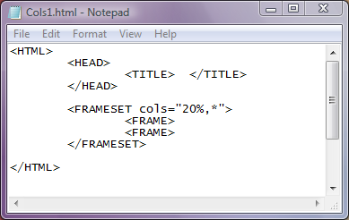
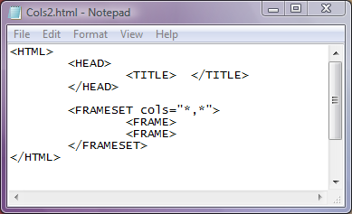
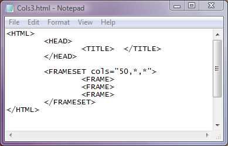
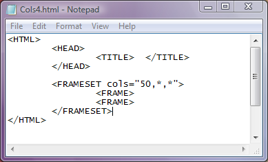

Atributul cols
Atributul cols seteaza numarul de coloane(cadre verticale), avand ca valori fie un numar
intreg pozitiv reprezentand latimea cadrului in pixeli, fie un procent reprezentand fractiunea din
latimea ferestrei browserului, fie asterix "*" reprezentand restul latimii ramase.
Iata mai jos codul unei pagini web cu fereastra divizata in 2 cadre verticale:

(click pe cod pentru a vedea pagina web)
In pagina web de mai sus, primul cadru are latimea de 20% din latimea ferestrei iar al doilea cadru
are tot restul latimii, adica 80%. In continuare va fi evidentiat un exemplu in care fereastra este
divizata in doua cadre coloana de latimi egale:

In acest al doilea exemplu, cele doua asteriscuri presupun ca latimea ferestrei browserului va fi
divizata in mod egal intre cele doua cadre.
Iata in continuare un exemplu in care sunt setate trei coloane, prima de latime 50 pixeli iar
celelalte doua isi vor imparti egal ceea ce mai ramane din latimea ferestrei browserului.

OBSERVATII
1)Pentru a fi afisate cadrele in browser, este necesar ca pentru fiecare cadru setat in eticheta FRAMESET
sa fie declarat cadrul printr-o eticheta FRAME. Altfel portiunea de fereastra alocata cadrului va fi
nefolosita.Iata mai jos un exemplu gresit,in care au fost setate trei cadre dar au fost declarate doar
doua.

2)Marginile cadrelor in acest moment sunt mobile, ele putand fi deplasate prin tragere cu mouse-ul
mai la stanga sau mai la dreapta. Dati click pe codul unei pagi web de mai sus si verificati acest lucru.
Pentru ca acele chenare sa revina la pozitia initiala la care au fost setate prin cod, dati click pe butonul
Refresh pentru reincarcarea paginii cu valorile initiale.
Inapoi la Cadre...